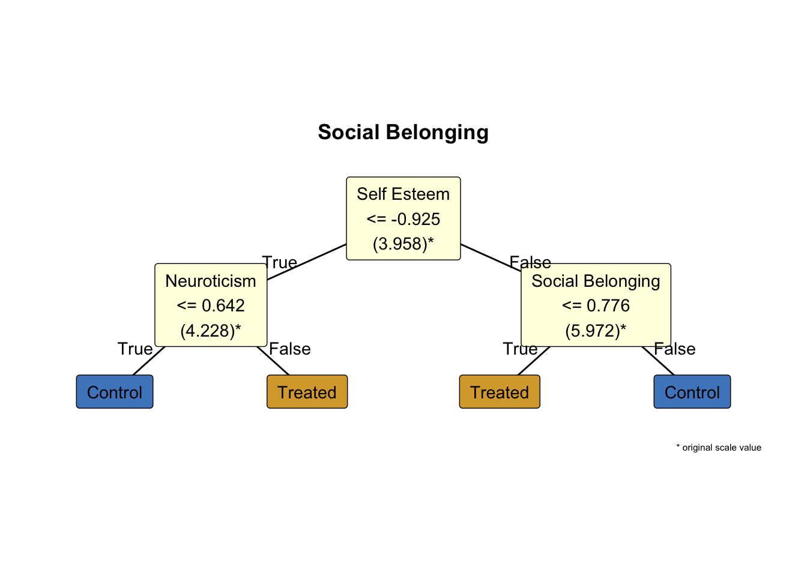

![]()
# for students: reproducibility is like following a recipe; each step ensures the same result
# restart fresh session if needed
# +--------------------------+
# | DO NOT ALTER |
# +--------------------------+
rstudioapi::restartSession()
# set seed for reproducibility
set.seed(123)
# essential library ---------------------------------------------------------
# install and load 'margot' from GitHub if missing
if (!require(margot, quietly = TRUE)) {
devtools::install_github("go-bayes/margot")
library(margot)
}
if (packageVersion("margot") < "1.0.43") {
stop("please install margot >= 1.0.43 for this workflow\n
run: devtools::install_github(\"go-bayes/margot\")
")
}
# call library
library("margot")
# load packages ----------------------------------------------------------
# install and load other packages from CRAN if missing
if (!requireNamespace("tidyverse", quietly = TRUE)) {
install.packages("tidyverse")
}
library(tidyverse)
if (!requireNamespace("qs", quietly = TRUE)) {
install.packages("qs")
}
library(qs)
if (!requireNamespace("here", quietly = TRUE)) {
install.packages("here")
}
library(here)
if (!requireNamespace("cli", quietly = TRUE)) {
install.packages("cli")
}
library("cli")
# create data directory if it doesn't exist -----------------------------
if (!dir.exists("data")) {
dir.create("data") # first time only: make a folder named 'data'
}
# define file paths ------------------------------------------------------
# use here() to build paths relative to your project root
data_dir <- here::here("data")
cli::cli_h1("created data folder ✔")
# download synthetic data ------------------------------------------------
# specify the url for the data file
url <- "https://www.dropbox.com/scl/fi/ru0ecayju04ja8ky1mhel/df_nz_long.qs?rlkey=prpk9a5v4vcg1ilhkgf357dhd&dl=1"
# download to a temporary file for safety
tmp_file <- tempfile(fileext = ".qs")
download.file(url, tmp_file, mode = "wb")
# read the data into R using qread
df_nz_long <- qread(tmp_file)
# inspect the data -------------------------------------------------------
# view the first few rows to check it loaded correctly
print(head(df_nz_long))
# list column names so you know what variables are available
print(colnames(df_nz_long))
# save a copy of the data ------------------------------------------------
# save the dataset to your data directory for future use
here_save_qs(df_nz_long, "df_nz_long", data_dir)
cli::cli_h1("downloaded data to data folder for furture use ✔")
# +--------------------------+
# | END DO NOT ALTER |
# +--------------------------+
# +--------------------------+
# | END |
# +--------------------------+
Note
Required - https://grf-labs.github.io/grf/
Optional - (VanderWeele, Mathur, and Chen 2020) link - (Suzuki, Shinozaki, and Yamamoto 2020) link - (Bulbulia 2024) link - (Hoffman et al. 2023) link
Hoffman, Katherine L., Diego Salazar-Barreto, Kara E. Rudolph, and Iván Díaz. 2023. “Introducing Longitudinal Modified Treatment Policies: A Unified Framework for Studying Complex Exposures,” April. https://doi.org/10.48550/arXiv.2304.09460.
Bulbulia, J. A. 2024. “A Practical Guide to Causal Inference in Three-Wave Panel Studies.” OSF. https://doi.org/10.31234/osf.io/uyg3d.
Suzuki, Etsuji, Tomohiro Shinozaki, and Eiji Yamamoto. 2020. “Causal Diagrams: Pitfalls and Tips.” Journal of Epidemiology 30 (4): 153–62. https://doi.org/10.2188/jea.JE20190192.
VanderWeele, Tyler J, Maya B Mathur, and Ying Chen. 2020. “Outcome-Wide Longitudinal Designs for Causal Inference: A New Template for Empirical Studies.” Statistical Science 35 (3): 437–66.
Key concepts
The workflow below introduces heterogeneous-treatment-effect (HTE) analysis with causal forests. By the end of the lecture you should understand six technical ideas: (1) ATE (lectures 1-5) (2) CATE (lecture 6) (3) The estimator \widehat{\tau}(x), (lecture 6) (4) the RATE statistics drawn from a Targeting-Operator Characteristic (TOC) curve (new) (5) Qini Curves (new) (6) policy trees—and know how each fits into an applied research pipelin (new)
PART 1 Heterogeneous-Treatment-Effect Analysis with causal forests
Why worry about heterogeneity?
Relying on the average treatment effect (ATE) is a bit like handing out size-nine shoes to an entire student body: on average they might fit, but watch the tall students hobble and the small ones trip.
Today we will focus on the causal question: “What would be the effects on multi-dimensional well-being if everyone spent at least one hour a week socialising with their community?”
Note that a one-hour boost in weekly community socialising could send some students’ sense of belonging soaring while leaving others desolated. Spotting that spread, measuring how big it really is, and deciding whether it is worth tailoring an exposure to individual ‘shoe sizes’ are the three practical goals of Heterogeneous Treatment Effects analysis.
1 Start with estimating the average treatment effect (ATE)
Assume the Three Fundamental Assumptions of Causal Inference here are met. Suppose we wish to estimate the average treatment effect for socialising with one’s community.
We begin with the most straightforward (and secretly impossible) counterfactual: *run two parallel universes—one where everyone gets the treatment, another where no-one does—and compare the final scores. The resulting difference is the average treatment effect:
\text{ATE}=E\!\bigl[Y(1)-Y(0)\bigr].
This gives us the average response – the shoe size… You’ve seen this before.
2 Do effects differ across people?
Variation is captured by the conditional average treatment effect (CATE),
\tau(x)=E\!\bigl[Y(1)-Y(0)\mid X=x\bigr],
where X gathers pre-treatment covariates – age, baseline wellbeing, personality, whatever we have measured and included in our model. Normally these will be our baseline confounders.
If \tau(x) turns out to be flat, we say there is no evidence for heterogeneity worth targeting.
People differ in countless, overlapping ways. Think of age, baseline wellbeing, personality traits, study habits, and more.
A linear interaction model tests whether the treatment works differently along one straight dimension, such as gender, by fitting a straight line.
But real‐world data often twist and turn. If the true relationship bends like a garden hose, a straight line will miss the curve.
Regression forests fix this by letting the data place splits wherever the shape changes, so they can follow any bends that appear (Wager and Athey 2018).
Straight-line models are fine for simple patterns, but regression forests can trace the curves that simple lines overlook.
Causal forests are based on regression forests, where the splitting attempts to maximise differences in causal effect estimates. What this means will soon be clear.
3. From straight lines to trees
Traditional ‘parametric’ models (like simple regression) guess a single functional shape – often a straight line – before seeing the data. A non-parametric model, by contrast, lets the data decide the shape. A regression tree is the simplest non-parametric learner we will use.
- Regression tree
Idea: split the covariate space by asking yes/no questions— ‘Age ≤ 20?’, ‘Baseline wellbeing > 0.3?’ — until each terminal leaf is fairly homogeneous. Inside a leaf the predicted outcome is just the sample mean, so the tree builds a piece-wise constant surface instead of a global line.
Analogy: think of tiling a garden with stepping-stones: each stone is flat, but taken together they follow the ground’s contours.
Regression forest
A single tree is quick and interpretable but unstable: small changes in the data can move the splits and shift predictions. A random forest grows many trees on bootstrap samples and averages their outputs. Averaging cancels much of the noise (Breiman 2001).Causal Forests
To estimate treatment effects rather than outcomes, each tree plays a two-step ‘honest’ game (Wager and Athey 2018):- use one half of its sample to choose splits that separate treated from control units;
- use the other half to compute treatment-control differences within every leaf.
For a new individual with covariates x_i each tree supplies a noisy leaf-level effect; the forest reports the average, written
- use one half of its sample to choose splits that separate treated from control units;
Breiman, Leo. 2001. “Random Forests.” Machine Learning 45 (1): 5–32. https://doi.org/10.1023/A:1010933404324.
Wager, Stefan, and Susan Athey. 2018. “Estimation and Inference of Heterogeneous Treatment Effects Using Random Forests.” Journal of the American Statistical Association 113 (523): 1228–42. https://doi.org/10.1080/01621459.2017.1319839.
\widehat{\tau}(x)=E[Y(1)-Y(0)\mid X=x].
Because the noisy estimates point in many directions, their average is markedly less variable – the wisdom of trees is a wisdom of crowds.
Straight‑line models suit simple patterns; regression forests flex to any bends; causal forests add a third dimension – variation in treatment responses. We’ll see this in action/
For more about causal forests see (~18mins in…)
4 Building Honest Trees: Avoiding Over-Fitting
Sample splitting meanings partitioning your data into training and testing sets. This avoids overfittign the model to observations (remember we seek to estimate parameters for an entire population under two different exposures, at most, only one of which is observed on any individual.) Sample splitting is a feature of estimation in cauasal forests – we separate model selection from estimation. Moreover, the forest adds a second safeguard: out-of-bag (OOB) prediction. Each \widehat{\tau}(x_i) is averaged only over trees that never used i in their split phase. Together, honesty and OOB prediction deliver reliable uncertainty estimates even in high-dimensional settings (i.e. settings with many covariates.)
5 Handling missing data
The grf package adopts Missing Incorporated in Attributes (MIA) splitting. ‘Missing’ can itself become a branch, so cases are neither discarded nor randomly imputed. This pragmatic approach keeps all observations in play while preserving the forest’s interpretability.
6 Is the heterogeneity actionable? — RATE statistics
Once we have a personalised score \widehat{\tau}(x) for every unit, the practical question is whether targeting high scorers delivers a benefit large enough to justify the extra effort. The tool of choice is the Targeting-Operator Characteristic (TOC) curve:
G(q)=\frac{1}{n}\sum_{i=1}^{\lfloor qn\rfloor}\widehat{\tau}_{(i)}, \qquad 0\le q\le1,
where \widehat{\tau}_{(1)}\ge\widehat{\tau}_{(2)}\ge\cdots are the estimated effects sorted from largest to smallest. The horizontal axis q is the fraction of the population we would treat; the vertical axis G(q) is the cumulative gain we expect from treating that top slice.
Two integrals of the TOC curve summarise how lucrative targeting could be:
RATE AUTOC (Area Under the TOC) puts equal weight on every q. This answers: If benefits are concentrated among the very best prospects, how much can we harvest by cherry-picking them?
RATE Qini applies heavier weight to the mid-range of q. This is the go-to metric when investigators face a fixed, moderate-sized budget—say, “we can afford to treat 40 % of individuals; will targeting help?” (Yadlowsky et al. 2021). We will evaluate the curve at treatment of 20% and 50% of the population.
Yadlowsky, Steve, Scott Fleming, Nigam Shah, Emma Brunskill, and Stefan Wager. 2021. “Evaluating Treatment Prioritization Rules via Rank-Weighted Average Treatment Effects.” arXiv Preprint arXiv:2111.07966. https://doi.org/10.48550/arXiv.2111.07966.
To quantify the economic or policy value of heterogeneity, rank units by \widehat{\tau}(x) and draw a Targeting-Operator Characteristic (TOC) curve that plots cumulative gain against the fraction q of the population treated.
7 RATE AUTOC EXAMPLE
Although OOB predictions are ‘out-of-sample’ for individual trees, the full forest still reuses information. A simple remedy when estimating the RATE AUTOC and Qini is to split the data, training the forest on one fold and testing RATE/Qini on the other. Again, this explicit splitting blocks optimistic bias and yields honest test statistics (such as confidence intervals) (Tibshirani et al. 2024).

Figure 1 depicts a typical RATE AUTOC curve with sample splitting. A steep initial rise indicates that a small, correctly targeted programme could deliver large gains. Note that the curve begins dipping below zero past about 30% of the sample. At that point we might be doing worse than the ATE by targeting the CATE – at least for some.
Remember – figuring out who will benefit from a treatment is a difficult statistical problem (Tibshirani et al. 2024).
Tibshirani, Julie, Susan Athey, Erik Sverdrup, and Stefan Wager. 2024. Grf: Generalized Random Forests. https://github.com/grf-labs/grf.
8 Visualising policy value: the Qini curve
A Qini curve displays cumulative benefit on the vertical axis and treatment coverage (% of the population treated) on the horizontal. As with the AUTOC curve we are using a held-out test fold to validate the response curve.

Figure 2: we find that focussing on the top 20 % of individuals nets a gain of 0.08 units (95 % CI 0.04–0.12). Widening the net to 50 % bumps the haul to 0.13 units (95 % CI 0.07–0.19). After that the curve flattens – once we’ve treated everyone who offers a decent return, there are no more ‘big fish’ left to catch.
9 From ‘a black box’ to simple rules: policy trees
The causal forest hands us a personalised CATE for every individual, mapping a high-dimensional covariate vector X to a number \widehat{\tau}(X). Helpful as that forecast may be, it stops short of telling us what to do: the function itself is too tangled — thousands of overlapping splits – to translate directly into a policy.
The policytree algorithm bridges that gap by collapsing the forest’s many \widehat{\tau}(X) values into a single, shallow decision tree whose depth you choose; each split is chosen to maximise expected benefit (Sverdrup et al. 2024). In this course we cap the depth at two for a practical balance, specifially:
Sverdrup, Erik, Ayush Kanodia, Zhengyuan Zhou, Susan Athey, and Stefan Wager. 2024. Policytree: Policy Learning via Doubly Robust Empirical Welfare Maximization over Trees. https://CRAN.R-project.org/package=policytree.
- At most three yes/no questions per rule, so the logic fits on a slide you can present to policy-makers
- Each leaf still contains enough observations to yield a stable effect estimate;
- Deeper trees increase computational complexity faster than they improve payoffs.

Policy Tree Findings for Effect of Hour Socialising on Social Belonging:
Participants are first split by Self Esteem at -0.925 (original scale: 3.958). For those with Self Esteem <= this threshold, the next split is by Neuroticism at 0.642 (original scale: 4.228). Within that subgroup, individuals with Neuroticism <= the threshold are recommended control, while those with Neuroticism > the threshold are recommended treated.
For participants with Self Esteem > -0.925 (original scale: 3.958), the second split is by Social Belonging at 0.776 (original scale: 5.972). In this subgroup, individuals with Social Belonging <= the threshold are recommended treated, while those with Social Belonging > the threshold are recommended control.

10 Ethical and practical considerations
There is no guarantee that statistical optimality will line up with social optimality. A rule that maximises expected health gains might still be unaffordable for a public agency, unfair to a protected group, or opaque to those asked to trust it. We all have our notions of fairness, and we can’t be expected to ignore them. Moreover, the estimation of CATE is always senstive to which variables we include in our model (see the caveats in Lecture 6).
So, we should not consider CATE an absolute guide to practice. We should be cautious.
Yet the very same CATE machinery that powers targeting also helps science move past a one-size-fits-all mindset. By mapping treatment effects across a high-dimensional covariate space, we can test whether our favourite categories – gender, age group, clinical severity – actually capture the differences that matter. Sometimes they do; often they don’t, revealing that nature is not carved at the joints of our folk classifications. Discovering where the forest finds meaningful splits can generate fresh psychological hypotheses about who responds, why, and under what circumstances, even when no policy decision is on the table. Over the next several weeks, we shall return to this point with examples.
Summary/next steps
Our workflow answers three questions in sequence:
- Is there substantial heterogeneity? Reject H_0{:}\tau(x) constant if RATE AUTOC or RATE Qini is positive and statistically reliable
- Does targeting pay at realistic budgets? Inspect the slope of the Qini curve around plausible coverage levels.
- Can we express the targeting rule in a few defensible steps? fit and validate a shallow policy tree.
In the lab section you will reproduce each stage on a simulated dataset.
PART 1 Laboratory: Data Preparation and Analysis Scripts
Link to data dictionary
Note
For information about the variables in the synthetic data, download the New Zealand Attitudes and Values Data Dictionary here under “Primary Resources”
Script 0: Synthetic Data Fetch
Script 1: Initial Data Wrangling
# script 1 workflow lecture 10
# may 2025
# questions: joseph.bulbulia@vuw.ac.nz
# +--------------------------+
# | DO NOT ALTER |
# +--------------------------+
# restart fresh session for a clean workspace
rstudioapi::restartSession()
# set seed for reproducibility
set.seed(123)
# essential library ---------------------------------------------------------
# install and load 'margot' from GitHub if missing
if (!require(margot, quietly = TRUE)) {
devtools::install_github("go-bayes/margot")
library(margot)
}
# min version of margot
if (packageVersion("margot") < "1.0.47") {
stop("please install margot >= 1.0.47 for this workflow\n
run: devtools::install_github(\"go-bayes/margot\")
")
}
# call library
library("margot")
# load packages -------------------------------------------------------------
# pacman will install missing packages automatically
if (!requireNamespace("pacman", quietly = TRUE)) install.packages("pacman")
pacman::p_load(
tidyverse, # data wrangling + plotting
qs, # fast data i/o
here, # project-relative file paths
data.table, # fast data manipulation
fastDummies, # dummy variable creation
naniar, # missing data handling
skimr, # summary statistics
grf, # machine learning forests
kableExtra, # tables
ggplot2, # graphs
doParallel, # parallel processing
grf, # causal forests
janitor, # variables names
stringr, # variable names
patchwork, # graphs
table1, # tables,
cli
)
# create directories --------------------------------------------------------
# create data directory if it doesn't exist
if (!dir.exists("data")) {
dir.create("data") # first time only: make a folder named 'data'
}
if (!dir.exists("save_directory")) {
dir.create("save_directory") # first time only: make a folder named 'data'
}
# set up data directory structure
data_dir <- here::here("data")
push_mods <- here::here("save_directory")
# load data -----------------------------------------------------------------
df_nz_long <- margot::here_read_qs("df_nz_long", data_dir)
# initial data prep ---------------------------------------------------------
# prepare intial data
# define labels for rural classification
rural_labels <- c(
"High Urban Accessibility",
"Medium Urban Accessibility",
"Low Urban Accessibility",
"Remote",
"Very Remote"
)
dat_prep <- df_nz_long |>
arrange(id, wave) |>
margot::remove_numeric_attributes() |>
mutate(
# cap extreme values
alcohol_intensity = pmin(alcohol_intensity, 15),
# flag heavy drinkers: freq ≥3 → 1, ≤2 → 0, else NA
heavy_drinker = case_when(
alcohol_frequency >= 3 ~ 1,
alcohol_frequency <= 2 ~ 0,
TRUE ~ NA_real_
),
# map freq categories to weekly counts
alcohol_frequency_weekly = recode(
alcohol_frequency,
`0` = 0, `1` = 0.25,
`2` = 1, `3` = 2.5,
`4` = 4.5,
.default = NA_real_
),
# relabel rural factor
rural_gch_2018_l = factor(
rural_gch_2018_l,
levels = 1:5,
labels = rural_labels,
ordered = TRUE
)
) |>
droplevels()
# view variable names -----------------------------------------------------
print(colnames(df_nz_long))
# get total participants
n_total = length(unique(df_nz_long$id))
# pretty number
n_total = margot::pretty_number(n_total)
# save
here_save(n_total, "n_total")
# +--------------------------+
# | END DO NOT ALTER |
# +--------------------------+
# +--------------------------+
# | MODIFY THIS SECTION |
# +--------------------------+
# +--------------------------+
# | ALERT |
# +--------------------------+
# +--------------------------+
# | OPTIONALLY MODIFY SECTION|
# +--------------------------+
# define study variables ----------------------------------------------------
# ** key decision 1: define your three study waves **
# ** define your study waves **
baseline_wave <- "2018" # baseline measurement
exposure_waves <- c("2019") # when exposure is measured
outcome_wave <- "2020" # when outcomes are measured
all_waves <- c(baseline_wave, exposure_waves, outcome_wave)
cli::cli_h1("set waves for three-wave study ✔")
# +--------------------------+
# |END OPTIONALLY MODIFY SEC.|
# +--------------------------+
# +--------------------------+
# | END ALERT |
# +--------------------------+
# define exposure variable ----------------------------------------------------
# ** key decision 2: define your exposure variable **
# +--------------------------+
# | ALERT |
# +--------------------------+
# +--------------------------+
# | MODIFY THIS SECTION |
# +--------------------------+
name_exposure <- "extraversion"
# exposure variable labels
var_labels_exposure <- list(
"extraversion" = "Extraversion",
"extraversion_binary" = "Extraversion (binary)"
)
cli::cli_h1("set variable name for exposure ✔")
# +--------------------------+
# | END ALERT |
# +--------------------------+
# +--------------------------+
# | END MODIFY SECTION |
# +--------------------------+
# define outcome variables -------------------------------------------
# ** key decision 3: define your outcome variable **
# +--------------------------+
# | ALERT |
# +--------------------------+
# +--------------------------+
# | MODIFY THIS SECTION |
# +--------------------------+
# ** key decision 3: define outcome variables **
# here, we are focussing on a subset of wellbeing outcomes
# chose outcomes relevant to * your * study. Might be all/some/none/exactly
# these:
outcome_vars <- c(
# health outcomes
# "alcohol_frequency_weekly", "alcohol_intensity",
# "hlth_bmi",
"log_hours_exercise",
# "hlth_sleep_hours",
# "short_form_health",
# psychological outcomes
# "hlth_fatigue",
"kessler_latent_anxiety",
"kessler_latent_depression",
"rumination",
# well-being outcomes
# "bodysat",
#"forgiveness", "gratitude",
"lifesat", "meaning_purpose", "meaning_sense",
# "perfectionism",
"pwi",
#"self_control",
"self_esteem",
#"sexual_satisfaction",
# social outcomes
"belong", "neighbourhood_community", "support"
)
cli::cli_h1("set variable name for outcomes ✔")
# +--------------------------+
# | END MODIFY SECTION |
# +--------------------------+
# +--------------------------+
# | END ALERT |
# +--------------------------+
# +--------------------------+
# | ALERT |
# +--------------------------+
# +--------------------------+
# | OPTIONALLY MODIFY SECTION|
# +--------------------------+
# define baseline variables -----------------------------------------------
# key decision 4 ** define baseline covariates **
# these are demographics, traits, etc. measured at baseline, that are common
# causes of the exposure and outcome.
# note we will automatically include baseline measures of the exposure and outcome
# later in the workflow.
baseline_vars <- c(
# demographics
"age", "born_nz_binary", "education_level_coarsen",
"employed_binary", "eth_cat", "male_binary",
"not_heterosexual_binary", "parent_binary", "partner_binary",
"rural_gch_2018_l", "sample_frame_opt_in_binary",
# personality traits (excluding exposure)
"agreeableness", "conscientiousness", "neuroticism", "openness",
# health and lifestyle
"alcohol_frequency", "alcohol_intensity", "hlth_disability_binary",
"log_hours_children", "log_hours_commute", "log_hours_exercise",
"log_hours_housework", "log_household_inc",
"short_form_health", "smoker_binary",
# social and psychological
"belong", "nz_dep2018", "nzsei_13_l",
"political_conservative", "religion_identification_level",
# religious denominations
"religion_bigger_denominations" # <- added for interest *OPTIONAL
)
cli::cli_h1("set baseline covariate names ✔")
# +--------------------------+
# | END ALERT |
# +--------------------------+
# +--------------------------+
# | END MODIFY SECTION |
# +--------------------------+
# +--------------------------+
# | DO NOT ALTER |
# +--------------------------+
# after selecting your exposure/ baseline / outcome variables do not modify this
# code
# make binary variable (UNLESS YOUR EXPOSURE IS A BINARY VARIABLE)
exposure_var_binary = paste0(name_exposure, "_binary")
# make exposure variable list (we will keep both the continuous and binary variable)
exposure_var <- c(name_exposure, paste0(name_exposure, "_binary"))
# sort for easier reference
baseline_vars <- sort(baseline_vars)
outcome_vars <- sort(outcome_vars)
# save key variables --------------------------------------------------------
margot::here_save(name_exposure, "name_exposure")
margot::here_save(var_labels_exposure,"var_labels_exposure")
margot::here_save(baseline_vars,"baseline_vars")
margot::here_save(exposure_var, "exposure_var")
margot::here_save(exposure_var_binary, "exposure_var_binary")
margot::here_save(outcome_vars, "outcome_vars")
margot::here_save(baseline_wave, "baseline_wave")
margot::here_save(exposure_waves, "exposure_waves")
margot::here_save(outcome_wave, "outcome_wave")
margot::here_save(all_waves,"all_waves")
cli::cli_h1("saved names and labels to be used for manuscript ✔")
# +--------------------------+
# | END DO NOT ALTER |
# +--------------------------+
# +--------------------------+
# | ALERT |
# +--------------------------+
# +--------------------------+
# | OPTIONALLY MODIFY SECTION|
# +--------------------------+
# select eligible participants ----------------------------------------------
# only include participants who have exposure data at baseline
# You might require tighter conditions
# for example, if you are interested in the effects of hours of childcare,
# you might want to select only those who were parents at baseline.
# talk to me if you think you might night tighter eligibility criteria.
ids_baseline <- dat_prep |>
# allow missing exposure at baseline
# this would give us greater confidence that we generalise to the target population
# filter(wave == baseline_wave) |>
# option: do not allow missing exposure at baseline
# this gives us greater confidence that we recover a incident effect
filter(wave == baseline_wave, !is.na(!!sym(name_exposure))) |>
pull(id)
# n eligible
n_participants <- length(ids_baseline)
# make pretty number
n_participants = margot::pretty_number(n_participants)
# save
here_save(n_participants, "n_participants")
cli::cli_h1("set eligibility criteria for baseline cohort ✔")
# +--------------------------+
# | ALERT |
# +--------------------------+
# EXAMPLE count different eligibility conditions ----------------------------------------------
# define eligibility criteria
eligible_ids <- df_nz_long |>
filter(wave == 2018 & year_measured == 1 & age < 30 & eth_cat == "pacific") |>
distinct(id) |>
pull(id)
# count eligible ids
length(eligible_ids)
# filter data to include only eligible participants
dat_long_different_eligibility <- dat_prep |>
filter(id %in% eligible_ids, wave %in% all_waves) |>
droplevels()
# +--------------------------+
# | END ALERT |
# +--------------------------+
# filter using general conditions -----------------------------------------
# filter data to include only eligible participants and relevant waves
dat_long_1 <- dat_prep |>
filter(id %in% ids_baseline, wave %in% all_waves) |>
droplevels()
# +--------------------------+
# |END OPTIONALLY MODIFY SEC.|
# +--------------------------+
# +--------------------------+
# | END ALERT |
# +--------------------------+
# +--------------------------+
# | ALERT |
# +--------------------------+
# +--------------------------+
# | MODIFY THIS SECTION |
# +--------------------------+
# plot distribution to help with cutpoint decision
dat_long_exposure <- dat_long_1 |> filter(wave %in% exposure_waves)
# define cutpoints for graph ----------------------------------------------
# define cutpoints *-- these can be adjusted --*
cut_points = c(1, 4)
# to use later in positivity graph in manuscript
lower_cut <- cut_points[[1]]
upper_cut <- cut_points[[2]]
threshold <- '>' # if upper
inverse_threshold <- '<='
scale_range = 'scale range 1-7'
# save for manuscript
here_save(lower_cut, "lower_cut")
here_save(upper_cut, "upper_cut")
here_save(threshold, "threshold")
here_save(inverse_threshold, "inverse_threshold")
here_save(scale_range, "scale_range")
cli::cli_h1("set thresholds for binary variable (if variable is continuous) ✔")
# make graph
graph_cut <- margot::margot_plot_categorical(
dat_long_exposure,
col_name = name_exposure,
sd_multipliers = c(-1, 1), # select to suit
# either use n_divisions for equal-sized groups:
# n_divisions = 2,
# or use custom_breaks for specific values:
custom_breaks = cut_points, # ** adjust as needed **
# could be "lower", no difference in this case, as no one == 4
cutpoint_inclusive = "upper",
show_mean = TRUE,
show_median = FALSE,
show_sd = TRUE
)
print(graph_cut)
# save your graph
margot::here_save(graph_cut, "graph_cut", push_mods)
# create binary exposure variable based on chosen cutpoint
dat_long_2 <- margot::create_ordered_variable(
dat_long_1,
var_name = name_exposure,
custom_breaks = cut_points, # ** -- adjust based on your decision above -- **
cutpoint_inclusive = "upper"
)
cli::cli_h1("created binary variable (if variable is continuous) ✔")
# +--------------------------+
# | END MODIFY SECTION |
# +--------------------------+
# +--------------------------+
# | END ALERT |
# +--------------------------+
# +--------------------------+
# | DO NOT ALTER |
# +--------------------------+
# process binary variables and log-transform --------------------------------
# convert binary factors to 0/1 format
dat_long_3 <- margot::margot_process_binary_vars(dat_long_2)
# log-transform hours and income variables: tables for analysis (only logged versions of vars)
dat_long_final <- margot::margot_log_transform_vars(
dat_long_3,
vars = c(starts_with("hours_"), "household_inc"), # **--- think about this ---***
prefix = "log_",
keep_original = FALSE,
exceptions = exposure_var # omit original variables# **--- think about this ---***
) |>
# select only variables needed for analysis
select(all_of(c(baseline_vars, exposure_var, outcome_vars, "id", "wave", "year_measured", "sample_weights"))) |>
droplevels()
# check missing data --------------------------------------------------------
# this is crucial to understand potential biases
missing_summary <- naniar::miss_var_summary(dat_long_final)
print(missing_summary)
margot::here_save(missing_summary, "missing_summary", push_mods)
# visualise missing data pattern
# ** -- takes a while to render **
vis_miss <- naniar::vis_miss(dat_long_final, warn_large_data = FALSE)
print(vis_miss)
margot::here_save(vis_miss, "vis_miss", push_mods)
# calculate percentage of missing data at baseline
dat_baseline_pct <- dat_long_final |> filter(wave == baseline_wave)
percent_missing_baseline <- naniar::pct_miss(dat_baseline_pct)
margot::here_save(percent_missing_baseline, "percent_missing_baseline", push_mods)
# save prepared dataset for next stage --------------------------------------
margot::here_save(dat_long_final, "dat_long_final", push_mods)
cli::cli_h1("made and saved final long data set for further processign in script 02 ✔")
# +--------------------------+
# | END DO NOT ALTER |
# +--------------------------+
# check positivity --------------------------------------------------------
# +--------------------------+
# | ALERT |
# +--------------------------+
# +--------------------------+
# | MODIFY THIS SECTION |
# +--------------------------+
# check
threshold # defined above
upper_cut # defined above
name_exposure # defined above
# create transition matrices to check positivity ----------------------------
# this helps assess whether there are sufficient observations in all exposure states
dt_positivity <- dat_long_final |>
filter(wave %in% c(baseline_wave, exposure_waves)) |>
select(!!sym(name_exposure), id, wave) |>
mutate(exposure = round(as.numeric(!!sym(name_exposure)), 0)) |>
# create binary exposure based on cutpoint
mutate(exposure_binary = ifelse(exposure > upper_cut, 1, 0)) |> # check
## *-- modify this --*
mutate(wave = as.numeric(wave) -1 )
# create transition tables
transition_tables <- margot::margot_transition_table(
dt_positivity,
state_var = "exposure",
id_var = "id",
waves = c(0, 1),
wave_var = "wave",
table_name = "transition_table"
)
# check
print(transition_tables$tables[[1]])
# save
margot::here_save(transition_tables, "transition_tables", push_mods)
# create binary transition tables
transition_tables_binary <- margot::margot_transition_table(
dt_positivity,
state_var = "exposure_binary",
id_var = "id",
waves = c(0, 1),
wave_var = "wave",
table_name = "transition_table_binary"
)
# check
print(transition_tables_binary$tables[[1]])
# save
margot::here_save(transition_tables_binary, "transition_tables_binary", push_mods)
# +--------------------------+
# | END ALERT |
# +--------------------------+
# create tables -----------------------------------------------------------
# baseline variable labels
var_labels_baseline <- list(
# demographics
"age" = "Age",
"born_nz_binary" = "Born in NZ",
"education_level_coarsen" = "Education Level",
"employed_binary" = "Employed",
"eth_cat" = "Ethnicity",
"male_binary" = "Male",
"not_heterosexual_binary" = "Non-heterosexual",
"parent_binary" = "Parent",
"partner_binary" = "Has Partner",
"rural_gch_2018_l" = "Rural Classification",
"sample_frame_opt_in_binary" = "Sample Frame Opt-In",
# economic & social status
"household_inc" = "Household Income",
"log_household_inc" = "Log Household Income",
"nz_dep2018" = "NZ Deprivation Index",
"nzsei_13_l" = "Occupational Prestige Index",
"household_inc" = "Household Income",
# personality traits
"agreeableness" = "Agreeableness",
"conscientiousness" = "Conscientiousness",
"neuroticism" = "Neuroticism",
"openness" = "Openness",
# beliefs & attitudes
"political_conservative" = "Political Conservatism",
"religion_identification_level" = "Religious Identification",
# health behaviors
"alcohol_frequency" = "Alcohol Frequency",
"alcohol_intensity" = "Alcohol Intensity",
"hlth_disability_binary" = "Disability Status",
"smoker_binary" = "Smoker",
"hours_exercise" = "Hours of Exercise",
# time use
"hours_children" = "Hours with Children",
"hours_commute" = "Hours Commuting",
"hours_exercise" = "Hours Exercising",
"hours_housework" = "Hours on Housework",
"log_hours_children" = "Log Hours with Children",
"log_hours_commute" = "Log Hours Commuting",
"log_hours_exercise" = "Log Hours Exercising",
"log_hours_housework" = "Log Hours on Housework",
# Added (Optional)
"religion_bigger_denominations" = "Major Religions"
)
here_save(var_labels_baseline, "var_labels_baseline")
# outcome variable labels, organized by domain
# reivew your outcomes make sure they appear on the list below
# comment out what you do not need
outcome_vars
df_nz_long$religion_bigger_denominations
# get names
var_labels_outcomes <- list(
# "alcohol_frequency_weekly" = "Alcohol Frequency (weekly)",
# "alcohol_intensity" = "Alcohol Intensity",
# "hlth_bmi" = "Body Mass Index",
# "hlth_sleep_hours" = "Sleep",
"log_hours_exercise" = "Hours of Exercise (log)",
# "short_form_health" = "Short Form Health",
"hlth_fatigue" = "Fatigue",
"kessler_latent_anxiety" = "Anxiety",
"kessler_latent_depression" = "Depression",
# "rumination" = "Rumination",
"bodysat" = "Body Satisfaction",
# "forgiveness" = "Forgiveness",
# "perfectionism" = "Perfectionism",
# "self_control" = "Self Control",
"self_esteem" = "Self Esteem",
"sexual_satisfaction" = "Sexual Satisfaction",
# "gratitude" = "Gratitude",
"lifesat" = "Life Satisfaction",
"meaning_purpose" = "Meaning: Purpose",
"meaning_sense" = "Meaning: Sense",
"pwi" = "Personal Well-being Index",
"belong" = "Social Belonging",
"neighbourhood_community" = "Neighbourhood Community",
"support" = "Social Support"
)
# save for manuscript
here_save(var_labels_outcomes, "var_labels_outcomes")
# save all variable translations
var_labels_measures <- c(var_labels_baseline, var_labels_exposure, var_labels_outcomes)
var_labels_measures
# save for manuscript
here_save(var_labels_measures, "var_labels_measures")
# +--------------------------+
# | END MODIFY SECTION |
# +--------------------------+
# +--------------------------+
# | DO NOT ALTER |
# +--------------------------+
# tables ------------------------------------------------------------------
# create baseline characteristics table
dat_baseline = dat_long_final |>
filter(wave %in% c(baseline_wave)) |>
mutate(
male_binary = factor(male_binary),
parent_binary = factor(parent_binary),
smoker_binary = factor(smoker_binary),
born_nz_binary = factor(born_nz_binary),
employed_binary = factor(employed_binary),
not_heterosexual_binary = factor(not_heterosexual_binary),
sample_frame_opt_in_binary = factor(sample_frame_opt_in_binary)
)
# +--------------------------+
# | ALERT |
# +--------------------------+
# save sample weights from baseline wave
# save sample weights
t0_sample_weights <- dat_baseline$sample_weights
here_save(t0_sample_weights, "t0_sample_weights")
# +--------------------------+
# | END ALERT |
# +--------------------------+
# make baseline table -----------------------------------------------------
baseline_table <- margot::margot_make_tables(
data = dat_baseline,
vars = baseline_vars,
by = "wave",
labels = var_labels_baseline,
table1_opts = list(overall = FALSE, transpose = FALSE),
format = "markdown"
)
print(baseline_table)
margot::here_save(baseline_table, "baseline_table", push_mods)
# create exposure table by wave
exposure_table <- margot::margot_make_tables(
data = dat_long_final |> filter(wave %in% c(baseline_wave, exposure_waves)),
vars = exposure_var,
by = "wave",
labels = var_labels_exposure,
factor_vars = exposure_var_binary,
table1_opts = list(overall = FALSE, transpose = FALSE),
format = "markdown"
)
print(exposure_table)
margot::here_save(exposure_table, "exposure_table", push_mods)
# create outcomes table by wave
outcomes_table <- margot::margot_make_tables(
data = dat_long_final |> filter(wave %in% c(baseline_wave, outcome_wave)),
vars = outcome_vars,
by = "wave",
labels = var_labels_outcomes,
format = "markdown"
)
print(outcomes_table)
margot::here_save(outcomes_table, "outcomes_table", push_mods)
# +--------------------------+
# | END DO NOT ALTER |
# +--------------------------+
# +--------------------------+
# | END |
# +--------------------------+
# note: completed data preparation step -------------------------------------
# you're now ready for the next steps:
# 1. creating wide-format dataset for analysis
# 2. applying causal inference methods
# 3. conducting sensitivity analyses
# key decisions summary:
# exposure variable: extraversion
# study waves: baseline (2018), exposure (2019), outcome (2020)
# baseline covariates: demographics, traits, health measures (excluding exposure)
# outcomes: health, psychological, wellbeing, and social variables
# binary cutpoint for exposure: here, 4 on the extraversion scale
# label names for tables
# THIS IS FOR INTEREST ONLY ----------------------------------------------------
# uncomment to view random chang in individuals
# visualise individual changes in exposure over time ------------------------
# useful for understanding exposure dynamics
# individual_plot <- margot_plot_individual_responses(
# dat_long_1,
# y_vars = name_exposure,
# id_col = "id",
# waves = c(2018:2019),
# random_draws = 56, # number of randomly selected individuals to show
# theme = theme_classic(),
# scale_range = c(1, 7), # range of the exposure variable
# full_response_scale = TRUE,
# seed = 123
# )
# print(individual_plot)Script 2: Make Wide Data Format With Censoring Weights
# script 2: causal workflow for estimating average treatment effects using margot
# may 2025
# questions: joseph.bulbulia@vuw.ac.nz
# +--------------------------+
# | DO NOT ALTER |
# +--------------------------+
# restart fresh session for a clean workspace
rstudioapi::restartSession()
# set seed for reproducibility
set.seed(123)
# libraries ---------------------------------------------------------------
# essential library ---------------------------------------------------------
if (!require(margot, quietly = TRUE)) {
devtools::install_github("go-bayes/margot")
}
if (packageVersion("margot") < "1.0.47") {
stop("please install margot >= 1.0.47 for this workflow\n
run: devtools::install_github(\"go-bayes/margot\")
")
}
library(margot)
# load packages -------------------------------------------------------------
# pacman will install missing packages automatically
if (!requireNamespace("pacman", quietly = TRUE)) install.packages("pacman")
pacman::p_load(
tidyverse, # data wrangling + plotting
qs, # fast data i/o
here, # project-relative file paths
data.table, # fast data manipulation
fastDummies, # dummy variable creation
naniar, # missing data handling
skimr, # summary statistics
grf, # machine learning forests
kableExtra, # tables
ggplot2, # graphs
doParallel, # parallel processing
grf, # causal forests
janitor, # variables names
stringr, # variable names
patchwork, # graphs
table1, # tables
cli
)
# save paths -------------------------------------------------------------------
push_mods <- here::here("save_directory")
# read data
dat_long_final <- margot::here_read("dat_long_final")
# read baseline sample weights
t0_sample_weights <- margot::here_read("t0_sample_weights")
# read exposure
name_exposure <- margot::here_read("name_exposure")
name_exposure_binary = paste0(name_exposure, "_binary")
name_exposure_continuous = name_exposure
# read variables
baseline_vars <- margot::here_read("baseline_vars")
exposure_var <- margot::here_read("exposure_var")
outcome_vars <- margot::here_read("outcome_vars")
baseline_wave <- margot::here_read("baseline_wave")
exposure_waves <- margot::here_read("exposure_waves")
outcome_wave <- margot::here_read("outcome_wave")
# define continuous columns to keep
continuous_columns_keep <- c("t0_sample_weights")
# check is this the exposure variable that you want?
name_exposure_binary
name_exposure_continuous
# ordinal use
ordinal_columns <- c(
"t0_education_level_coarsen",
"t0_eth_cat",
"t0_rural_gch_2018_l",
"t0_gen_cohort",
"t0_religion_bigger_denominations" # <- added for demonstration (optional)
)
# define wide variable names
t0_name_exposure_binary <- paste0("t0_", name_exposure_binary)
t0_name_exposure_binary
# make exposure names (continuous not genreally used)
t1_name_exposure_binary <- paste0("t1_", name_exposure_binary)
t1_name_exposure_binary
# treatments (continuous verion)
t0_name_exposure <- paste0("t0_", name_exposure_continuous)
t1_name_exposure <- paste0("t1_", name_exposure_continuous)
t0_name_exposure_continuous <- paste0("t0_", name_exposure)
t1_name_exposure_continuous <- paste0("t1_", name_exposure)
# raw outcomes
# read health outcomes
outcome_vars <- here_read("outcome_vars")
t2_outcome_z <- paste0("t2_", outcome_vars, "_z")
# view
t2_outcome_z
# check
str(dat_long_final)
# check
naniar::gg_miss_var(dat_long_final)
# impute data --------------------------------------------------------------
# define cols we will not standardise
continuous_columns_keep <- c("t0_sample_weights")
# remove sample weights
dat_long_final_2 <- dat_long_final |> select(-sample_weights)
# prepare data for analysis ----------------------
dat_long_final_2 <- margot::remove_numeric_attributes(dat_long_final_2)
# wide data
df_wide <- margot_wide_machine(
dat_long_final,
id = "id",
wave = "wave",
baseline_vars,
exposure_var = exposure_var,
outcome_vars,
confounder_vars = NULL,
imputation_method = "none",
include_exposure_var_baseline = TRUE,
include_outcome_vars_baseline = TRUE,
extend_baseline = FALSE,
include_na_indicators = FALSE
)
# check
colnames(df_wide)
# return sample weights
df_wide$t0_sample_weights <- t0_sample_weights
# save
margot::here_save(df_wide, "df_wide")
#df_wide <- margot::here_read("df_wide")
naniar::vis_miss(df_wide, warn_large_data = FALSE)
# view
glimpse(df_wide)
# order data with missingness assigned to work with grf and lmtp
# if any outcome is censored all are censored
# create version for model reports
# check
colnames(df_wide)
# made data wide in correct format
# ** ignore warning ***
df_wide_encoded <- margot::margot_process_longitudinal_data_wider(
df_wide,
ordinal_columns = ordinal_columns, #<- make sure all ordinal columns have been identified
continuous_columns_keep = continuous_columns_keep,
not_lost_in_following_wave = "not_lost_following_wave",
lost_in_following_wave = "lost_following_wave",
remove_selected_columns = TRUE,
exposure_var = exposure_var,
scale_continuous = TRUE
)
# check
colnames(df_wide_encoded)
# check
table(df_wide_encoded$t0_not_lost_following_wave)
# make the binary variable numeric
df_wide_encoded[[t0_name_exposure_binary]] <-
as.numeric(df_wide_encoded[[t0_name_exposure_binary]]) - 1
df_wide_encoded[[t1_name_exposure_binary]] <-
as.numeric(df_wide_encoded[[t1_name_exposure_binary]]) - 1
# view
df_wide_encoded[[t0_name_exposure_binary]]
df_wide_encoded[[t1_name_exposure_binary]]
# 1. ensure both binaries only take values 0 or 1 (ignore NA)
stopifnot(all(df_wide_encoded[[t0_name_exposure_binary]][!is.na(df_wide_encoded[[t0_name_exposure_binary]])] %in% 0:1),
all(df_wide_encoded[[t1_name_exposure_binary]][!is.na(df_wide_encoded[[t1_name_exposure_binary]])] %in% 0:1))
# 2. ensure NA‐patterns match between t1_exposure and t0_lost flag
# count n-as in t1 exposure
n_na_t1 <- sum(is.na(df_wide_encoded[[t1_name_exposure_binary]]))
# count how many were lost at t0
n_lost_t0 <- sum(df_wide_encoded$t0_lost_following_wave == 1, na.rm = TRUE)
# print them for inspection
message("NAs in ", t1_name_exposure_binary, ": ", n_na_t1)
message("t0_lost_following_wave == 1: ", n_lost_t0)
# stop if they don’t match
stopifnot(n_na_t1 == n_lost_t0)
# 3. ensure if t1 is non‐NA then subject was not lost at t0
stopifnot(all(is.na(df_wide_encoded[[t1_name_exposure_binary]]) |
df_wide_encoded[["t0_not_lost_following_wave"]] == 1))
# view
glimpse(df_wide_encoded)
#naniar::vis_miss(df_wide_encoded, warn_large_data = FALSE)
naniar::gg_miss_var(df_wide_encoded)
#save data
here_save(df_wide_encoded, "df_wide_encoded")
# new weights approach ---------------------------------------------------------
# panel attrition workflow using grf (two-stage IPCW + design weights)
# -----------------------------------------------------------------------------
# builds weights in two stages:
# w0 : baseline -> t1 (baseline covariates)
# w1 : t1 survivors -> t2 (baseline + time-1 exposure)
# final weight = t0_sample_weights × w0 × w1, then trimmed & normalised.
# -----------------------------------------------------------------------------
# ── 0 setup ───────────────────────────────────────────────────────────────────
library(tidyverse) # wrangling
library(glue) # strings
library(grf) # forests
library(cli) # progress
set.seed(123)
# -----------------------------------------------------------------------------
# 1 import full, unfiltered baseline file
# -----------------------------------------------------------------------------
df <- margot::here_read("df_wide_encoded")
cli::cli_alert_info(glue("{nrow(df)} rows × {ncol(df)} columns loaded"))
# -----------------------------------------------------------------------------
# 2 stage‑0 censoring: dropout between t0 → t1
# -----------------------------------------------------------------------------
baseline_covars <- df %>%
select(starts_with("t0_"), -ends_with("_lost"), -ends_with("lost_following_wave"), -ends_with("_weights")) %>%
colnames() %>% sort()
# select your baseline vars and coerce to numeric
num_dat <- df %>%
select(all_of(baseline_covars)) %>%
mutate(across(everything(), as.numeric))
# build a true numeric matrix
X0 <- as.matrix(num_dat)
# make factor
D0 <- factor(df$t0_lost_following_wave, levels = c(0, 1)) # 0 = stayed, 1 = lost
cli::cli_h1("stage 0: probability forest for baseline dropout …")
# then fit
pf0 <- probability_forest(X0, D0)
P0 <- predict(pf0, X0)$pred[, 2] # P(dropout by t1)
w0 <- ifelse(D0 == 1, 0, 1 / (1 - P0)) # IPCW for stage 0
df$w0 <- w0
# -----------------------------------------------------------------------------
# 3 stage‑1 censoring: dropout between t1 → t2 (baseline + exposure)
# -----------------------------------------------------------------------------
exposure_var <- t1_name_exposure_binary # ← binary exposure variable name
# filter out those lost (already weighted for censoring)
df1 <- df %>% filter(t0_lost_following_wave == 0)
# filter to those at risk in stage-1
cen1_data <- df %>%
filter(t0_lost_following_wave == 0,
!is.na(.data[[exposure_var]]))
# coerce baseline covars + exposure all at once
X1_num <- cen1_data %>%
# convert every t0_… and the exposure to numeric
mutate(across(all_of(c(baseline_covars, exposure_var)), as.numeric)) %>%
# now select in the order you want
select(all_of(baseline_covars), all_of(exposure_var))
# build numeric matrix
X1 <- as.matrix(X1_num)
colnames(X1)[ncol(X1)] <- exposure_var
D1 <- factor(cen1_data$t1_lost_following_wave, levels = c(0, 1))
cli::cli_h1("stage 1: probability forest for second-wave dropout …")
pf1 <- probability_forest(X1, D1)
P1 <- predict(pf1, X1)$pred[, 2]
w1 <- ifelse(D1 == 1, 0, 1 / (1 - P1))
# map w1 back to df1 (rows with NA exposure get weight 0)
df1$w1 <- 0
df1$w1[match(cen1_data$id, df1$id)] <- w1
# -----------------------------------------------------------------------------
# 4 combine design × IPCW weights
# -----------------------------------------------------------------------------
# bring forward w0 for the matching rows (safe join)
w0_vec <- df$w0[match(df1$id, df$id)]
# combined weight before trim / normalise
raw_w <- df1$t0_sample_weights * w0_vec * df1$w1
df1$raw_weight <- raw_w
# trim + normalise (exclude NA & zeros)
pos <- raw_w[!is.na(raw_w) & raw_w > 0]
lb <- quantile(pos, 0.00, na.rm = TRUE)
ub <- quantile(pos, 0.99, na.rm = TRUE)
trimmed <- pmin(pmax(raw_w, lb), ub)
normalised <- trimmed / mean(trimmed, na.rm = TRUE)
df1$combo_weights <- normalised <- trimmed / mean(trimmed)
df1$combo_weights <- normalised
hist(df1$combo_weights[df1$t1_lost_following_wave == 0],
main = "combined weights (observed)", xlab = "weight")
# -----------------------------------------------------------------------------
# 5 analysis set: observed through t2 (not censored at either stage)
# -----------------------------------------------------------------------------
df_analysis <- df1 %>%
filter(t1_lost_following_wave == 0) %>%
droplevels()
margot::here_save(df_analysis, "df_analysis_weighted_two_stage")
cli::cli_alert_success(glue("analysis sample: {nrow(df_analysis)} obs"))
# TEST DO NOT UNCOMMENT
# -----------------------------------------------------------------------------
# 6 causal forest (edit outcome var if needed)
# -----------------------------------------------------------------------------
#
# outcome_var <- "t2_kessler_latent_depression_z" # ← edit
#
# Y <- df_analysis[[outcome_var]]
# W <- df_analysis[[exposure_var]]
# X <- as.matrix(df_analysis[, baseline_covars])
#
# cf <- causal_forest(
# X, Y, W,
# sample.weights = df_analysis$combo_weights,
# num.trees = 2000
# )
#
# print(average_treatment_effect(cf))
# margot::here_save(cf, "cf_ipcw_two_stage")
# -----------------------------------------------------------------------------
# 7 save objects
# -----------------------------------------------------------------------------
cli::cli_h1("two-stage IPCW workflow complete ✔")
# # maintain workflow
E <- baseline_covars
here_save(E, "E")
length(E)
colnames(df_analysis)
cli::cli_h1("naming convention matcheds `grf` ✔")
# arrange
df_grf <- df_analysis |>
relocate(ends_with("_weights"), .before = starts_with("t0_")) |>
relocate(ends_with("_weight"), .before = ends_with("_weights")) |>
relocate(starts_with("t0_"), .before = starts_with("t1_")) |>
relocate(starts_with("t1_"), .before = starts_with("t2_")) |>
relocate("t0_not_lost_following_wave", .before = starts_with("t1_")) |>
relocate(all_of(t1_name_exposure_binary), .before = starts_with("t2_")) |>
droplevels()
colnames(df_grf)
# +--------------------------+
# | ALERT |
# +--------------------------+
# make sure to do this
# save final data
margot::here_save(df_grf, "df_grf")
cli::cli_h1("saved data `df_grf` for models ✔")
# +--------------------------+
# | END ALERT |
# +--------------------------+
# check final dataset
colnames(df_grf)
# visualise missing
# should have no missing in t1 and t2 variables
# handled by IPCW
# make final missing data graph
missing_final_data_plot <- naniar::vis_miss(df_grf, warn_large_data = FALSE)
missing_final_data_plot
# save plot
margot_save_png(missing_final_data_plot, prefix = "missing_final_data")
# checks
colnames(df_grf)
str(df_grf)
# check exposures
table(df_grf[[t1_name_exposure_binary]])
# check
hist(df_grf$combo_weights)
# calculate summary statistics
t0_weight_summary <- summary(df_wide_encoded)
# check
glimpse(df_grf$combo_weights)
# visualise weight distributions
hist(df_grf$combo_weights, main = "t0_stabalised weights", xlab = "Weight")
# check n
n_observed_grf <- nrow(df_grf)
# view
n_observed_grf
# save
margot::here_save(n_observed_grf, "n_observed_grf")
# +--------------------------+
# | END DO NOT ALTER |
# +--------------------------+
# +--------------------------+
# | END |
# +--------------------------+
# this is just for your interest ------------------------------------------
# not used in final manuscript
# FOR INTEREESTS
# inspect propensity scores -----------------------------------------------
# get data
# df_grf <- here_read('df_grf')
#
# # assign weights var name
# weights_var_name = "t0_adjusted_weights"
#
# # baseline covariates # E already exists and is defined
# E
#
# # must be a data frame, no NA in exposure
#
# # df_grf is a data frame - we must process this data frame in several steps
# # user to specify which columns are outcomes, default to 'starts_with("t2_")'
# df_propensity_org <- df_grf |> select(!starts_with("t2_"))
#
# # Remove NAs and print message that this has been done
# df_propensity <- df_propensity_org |> drop_na() |> droplevels()
#
# # E_propensity_names
# # first run model for baseline propensity if this is selected. The default should be to not select it.
# propensity_model_and_plots <- margot_propensity_model_and_plots(
# df_propensity = df_propensity,
# exposure_variable = t1_name_exposure_binary,
# baseline_vars = E,
# weights_var_name = weights_var_name,
# estimand = "ATE",
# method = "ebal",
# focal = NULL
# )
#
# # visualise
# summary(propensity_model_and_plots$match_propensity)
#
# # key plot
# propensity_model_and_plots$love_plot
#
# # other plots
# propensity_model_and_plots$summary_plot
# propensity_model_and_plots$balance_table
# propensity_model_and_plots$diagnostics
#
#
# # check size
# size_bytes <- object.size(propensity_model_and_plots)
# print(size_bytes, units = "auto") # Mb
#
# # use qs to save only if you have space
# here_save_qs(propensity_model_and_plots,
# "propensity_model_and_plots",
# push_mods)Script 3: Models & Graphs
# script 3: causal workflow for estimating average treatment effects using margot
# may 2025
# questions: joseph.bulbulia@vuw.ac.nz
# +--------------------------+
# | DO NOT ALTER |
# +--------------------------+
# restart fresh session
rstudioapi::restartSession()
# reproducibility ---------------------------------------------------------
# choose number
set.seed(123)
seed = 123
# essential library ---------------------------------------------------------
if (!require(margot, quietly = TRUE)) {
devtools::install_github("go-bayes/margot")
library(margot)
}
# min version of margot
if (packageVersion("margot") < "1.0.47") {
stop("please install margot >= 1.0.47 for this workflow\n
run: devtools::install_github(\"go-bayes/margot\")
")
}
# call library
library("margot")
# check package version
packageVersion(pkg = "margot")
# load libraries ----------------------------------------------------------
# pacman will install missing packages automatically
if (!requireNamespace("pacman", quietly = TRUE)) install.packages("pacman")
pacman::p_load(
tidyverse, # data wrangling + plotting
qs, # fast data i/o
here, # project-relative file paths
data.table, # fast data manipulation
fastDummies, # dummy variable creation
naniar, # missing data handling
skimr, # summary statistics
grf, ranger, # machine learning forests
doParallel, # parallel processing,
kableExtra,
ggplot2 , # graphs
rlang , # functions for base types/Core R/ 'Tidyverse'
purrr , # functional programming tools.
patchwork, # nice graph placement
janitor, # nice labels
glue, # format/ interpolate a string
cli,
future,
crayon,
glue,
stringr,
future,
furrr
)
# directory path configuration -----------------------------------------------
# save path (customise for your own computer) ----------------------------
push_mods <- here::here("save_directory")
# read original data (for plots) ------------------------------------------
original_df <- margot::here_read("df_wide", push_mods)
# plot title --------------------------------------------------------------
title_binary = "Effects of {{name_exposure}} on {{name_outcomes}}"
filename_prefix = "grf_extraversion_wb"
# for manuscript later
margot::here_save(title_binary,"title_binary")
# import names ------------------------------------------------------------
name_exposure <- margot::here_read("name_exposure")
name_exposure
# make exposure names
t1_name_exposure_binary <- paste0("t1_", name_exposure, "_binary")
# check exposure name
t1_name_exposure_binary
# read outcome vars
outcome_vars <- margot::here_read("outcome_vars")
# read and sort outcome variables -----------------------------------------
# we do this by domain: health, psych, present, life, social
read_and_sort <- function(key) {
raw <- margot::here_read(key, push_mods)
vars <- paste0("t2_", raw, "_z")
sort(vars)
}
t2_outcome_z <- read_and_sort("outcome_vars")
# view
t2_outcome_z
# +--------------------------+
# | END DO NOT ALTER |
# +--------------------------+
# +--------------------------+
# | MODIFY THIS SECTION |
# +--------------------------+
# define names for titles -------------------------------------------------
nice_exposure_name = stringr::str_to_sentence(name_exposure)
nice_outcome_name = "Wellbeing"
title = glue::glue("Effect of {nice_exposure_name} on {nice_outcome_name}")
title
# save for final rport
here_save(title, "title")
# combine outcomes ---------------------------------------------------------
# check outcome vars and make labels for graphs/tables
outcome_vars
label_mapping_all <- list(
#"t2_alcohol_frequency_weekly_z" = "Alcohol Frequency",
#"t2_alcohol_intensity_weekly_z" = "Alcohol Intensity",
#"t2_hlth_bmi_z" = "BMI",
#"t2_hlth_sleep_hours_z" = "Sleep",
"t2_log_hours_exercise_z" = "Hours of Exercise (log)",
#"t2_short_form_health_z" = "Short Form Health"
"t2_hlth_fatigue_z" = "Fatigue",
"t2_kessler_latent_anxiety_z" = "Anxiety",
"t2_kessler_latent_depression_z" = "Depression",
"t2_rumination_z" = "Rumination",
# "t2_bodysat_z" = "Body Satisfaction",
"t2_foregiveness_z" = "Forgiveness",
"t2_perfectionism_z" = "Perfectionism",
"t2_self_esteem_z" = "Self Esteem",
# "t2_self_control_z" = "Self Control",
# "t2_sexual_satisfaction_z" = "Sexual Satisfaction".
"t2_gratitude_z" = "Gratitude",
"t2_lifesat_z" = "Life Satisfaction",
"t2_meaning_purpose_z" = "Meaning: Purpose",
"t2_meaning_sense_z" = "Meaning: Sense",
"t2_pwi_z" = "Personal Well-being Index",
"t2_belong_z" = "Social Belonging",
"t2_neighbourhood_community_z" = "Neighbourhood Community",
"t2_support_z" = "Social Support"
)
# save
here_save(label_mapping_all, "label_mapping_all")
# check
label_mapping_all
cli::cli_h1("created and saved label_mapping for use in graphs/tables ✔")
# make options -------------------------------------------------------------
# titles
ate_title = "ATE Effects of {{nice_name_exposure}} on {{nice_name_outcome}}"
subtitle = ""
filename_prefix = "final_report"
#
here_save(ate_title, "ate_title")
here_save(filename_prefix, "filename_prefix")
# settings
x_offset = -.25
x_lim_lo = -.25
x_lim_hi = .25
# defaults for ate plots
base_defaults_binary <- list(
type = "RD",
title = ate_title,
e_val_bound_threshold = 1.2,
colors = c(
"positive" = "#E69F00",
"not reliable" = "grey50",
"negative" = "#56B4E9"
),
x_offset = x_offset,
# will be set based on type
x_lim_lo = x_lim_lo,
# will be set based on type
x_lim_hi = x_lim_hi,
text_size = 8,
linewidth = 0.75,
estimate_scale = 1,
base_size = 18,
point_size = 4,
title_size = 19,
subtitle_size = 16,
legend_text_size = 10,
legend_title_size = 10,
include_coefficients = FALSE
)
# save
# health graph options
outcomes_options_all <- margot_plot_create_options(
title = subtitle,
base_defaults = base_defaults_binary,
subtitle = subtitle,
filename_prefix = filename_prefix
)
# policy tree graph settings ----------------------------------------------
decision_tree_defaults <- list(
span_ratio = .3,
text_size = 3.8,
y_padding = 0.25,
edge_label_offset = .002,
border_size = .05
)
policy_tree_defaults <- list(
point_alpha = .5,
title_size = 12,
subtitle_size = 12,
axis_title_size = 12,
legend_title_size = 12,
split_line_color = "red",
split_line_alpha = .8,
split_label_color = "red",
list(split_label_nudge_factor = 0.007)
)
# +--------------------------+
# | END MODIFY SECTION |
# +--------------------------+
# +----------------------------------------------+
# | DO NOT ALTER (except where noted) |
# +----------------------------------------------+
str(df_grf)
# load GRF data and prepare inputs ----------------------------------------
df_grf <- margot::here_read('df_grf', push_mods)
E <- margot::here_read('E', push_mods)
# check exposure binary
stopifnot(all(df_grf[[t1_name_exposure_binary]][!is.na(df_grf[[t1_name_exposure_binary]])] %in% 0:1))
# set exposure and weights
W <- as.vector(df_grf[[t1_name_exposure_binary]]) # note it is the processed weights for attrition "t1"
# old workflow
# weights <- df_grf$t1_adjusted_weights
# new weights workflow, use "combo_weights" -- see revised script 2
weights<- df_grf$combo_weights
hist(weights) # quick check for extreme weights
# select covariates and drop numeric attributes
X <- margot::remove_numeric_attributes(df_grf[E])
# set model defaults -----------------------------------------------------
grf_defaults <- list(seed = 123, stabilize.splits = TRUE, num.trees = 2000)
# causal forest model -----------------------------------------------------------
# +--------------------------+
# | ALERT |
# +--------------------------+
# !!!! THIS WILL TAKE TIME !!!!!
# **----- COMMENT OUT AFTER YOU RUN TO AVOID RUNNING MORE THAN ONCE -----**
models_binary <- margot_causal_forest_parallel(
data = df_grf,
outcome_vars = t2_outcome_z,
covariates = X,
W = W,
weights = weights,
grf_defaults = grf_defaults,
top_n_vars = 15,
save_models = TRUE,
save_data = TRUE,
train_proportion = 0.7
)
# +--------------------------+
# | ALERT |
# +--------------------------+
# !!!! THIS WILL TAKE TIME !!!!!
# save model
margot::here_save_qs(models_binary, "models_binary", push_mods)
# +--------------------------+
# | END ALERT |
# +--------------------------+
cli::cli_h1("causal forest model completed and saved ✔")
# read results ------------------------------------------------------------
# if you save models you do not need to re-run them
# +--------------------------+
# | ALERT |
# +--------------------------+
# !!!! THIS WILL TAKE TIME !!!!!
models_binary <- margot::here_read_qs("models_binary", push_mods)
# +--------------------------+
# | END ALERT |
# +--------------------------+
# count models by category
# just a check
cat("Number of original models:\n", length(models_binary$results), "\n")
# make ate plots ----------------------------------------------------------
# ************* NEW - CORRECTION FOR FAMILY-WISE ERROR **********
# then pass to the results
ate_results <- margot_plot(
models_binary$combined_table, # <- now pass the corrected results.
options = outcomes_options_all,
label_mapping = label_mapping_all,
include_coefficients = FALSE,
save_output = FALSE,
order = "evaluebound_asc",
original_df = original_df,
e_val_bound_threshold = 1.2,
rename_ate = TRUE,
adjust = "bonferroni", #<- new
alpha = 0.05 # <- new
)
# view
cat(ate_results$interpretation)
# check
ate_results$plot
# interpretation
cat(ate_results$interpretation)
# save
here_save_qs(ate_results, "ate_results", push_mods)
# make markdown tables (to be imported into the manuscript)
margot_bind_tables_markdown <- margot_bind_tables(
ate_results$transformed_table,
#list(all_models$combined_table),
sort_E_val_bound = "desc",
e_val_bound_threshold = 1.2,
# ← choose threshold
highlight_color = NULL,
bold = TRUE,
rename_cols = TRUE,
col_renames = list("E-Value" = "E_Value", "E-Value bound" = "E_Val_bound"),
rename_ate = TRUE,
threshold_col = "E_Val_bound",
output_format = "markdown",
kbl_args = list(
booktabs = TRUE,
caption = NULL,
align = NULL
)
)
# view markdown table
margot_bind_tables_markdown
# save for publication
here_save(margot_bind_tables_markdown, "margot_bind_tables_markdown")
# evaluate models ---------------------------------------------------------
# trim models if extreme propensity scores dominate
# diag_tbl_98 <- margot_inspect_qini(models_binary,
# propensity_bounds = c(0.01, 0.99))
# +--------------------------+
# | END DO NOT ALTER |
# +--------------------------+
# +--------------------------+
# | MODIFY THIS SECTION |
# +--------------------------+
# FLIPPING OUTCOMES ------------------------------------------------------
# note that the meaning of a heterogeneity will vary depending on our interests.
# typically we are interested in whether an exposure improves life, and whether there is variability (aka HTE) in degrees of improvement.
# in this case we must take negative outcomes and "flip" them -- recalculating the policy trees and qini curves for each
# for example if the outcome is depression, then by flipping depression we better understand how the exposure *reduces* depression.
# what if the exposure is harmful? say what if we are interested in the effect of depression on wellbeing? In that case, we might
# want to "flip" the positive outcomes. That is, we might want to understand for whom a negative exposure is extra harmful.
# here we imagine that extroversion is generally positive in its effects, and so we "flip" the negative outcomes.
# if you were interested in a negative exposure, say "neuroticism" then you would probably want to flip the positive outcomes.
# note there are further questions we might ask. We might consider who responds more 'weakly" to a negative exposure (or perhaps to a positive exposure).
# Such a question could make sense if we had an exposure that was generally very strong.
# however, let's stay focussed on evaluating evaluating strong responders. We will flip the negative outcomes if we expect the exposure is positive,
# and flip the positive outcomes if we expect the exposure to be generally negative.
# if there is no natural "positive" or negative, then just make sure the valence of the outcomes aligns, so that all are oriented in the same
# direction if they have a valence. if unsure, just ask for help!
# flipping models: outcomes we want to minimise given the exposure --------
# standard negative outcomes/ not used in this example
# flipping models: outcomes we want to minimise given the exposure --------
# standard negative outcomes/ not used in this example
# +--------------------------+
# | MODIFY THIS |
# +--------------------------+
# WHICH OUTCOMES -- if any ARE UNDESIREABLE?
flip_outcomes_standard = c(
#"t2_alcohol_frequency_weekly_z",
#"t2_alcohol_intensity_z",
#"t2_hlth_bmi_z",
#"t2_hlth_fatigue_z",
"t2_kessler_latent_anxiety_z", # ← select
"t2_kessler_latent_depression_z",# ← select
"t2_rumination_z" # ← select
#"t2_perfectionism_z" # the exposure variable was not investigated
)
# when exposure is negative and you want to focus on how much worse off
# NOTE IF THE EXPOSURE IS NEGATIVE, FOCUS ON WHICH OUTCOMES, if any, ARE POSITIVE AND FLIP THESE?
# flip_outcomes<- c( setdiff(t2_outcomes_all, flip_outcomes_standard) )
# our example has the exposure as positive
flip_outcomes <- flip_outcomes_standard
# check
flip_outcomes
# +--------------------------+
# | END MODIFY |
# +--------------------------+
# get labels
flipped_names <- margot_get_labels(flip_outcomes, label_mapping_all)
# check
flipped_names
# save for publication
here_save(flipped_names, "flipped_names")
cli::cli_h1("flipped outcomes identified and names saved ✔")
# flip negatively oriented outcomes --------------------------------------
# +--------------------------+
# | DO NOT ALTER |
# +--------------------------+
# flip models using margot's function
# *** this will take some time ***
# ** give it time **
# ** once run/ comment out **
# +--------------------------+
# | ALERT |
# +--------------------------+
# !!!! THIS WILL TAKE TIME !!!!!
models_binary_flipped_all <- margot_flip_forests_parallel(models_binary,
flip_outcomes = flip_outcomes_standard,
recalc_policy = TRUE,
max_size_GB = 32)
cli::cli_h1("flipped forest models completed ✔")
# !!!! THIS WILL TAKE TIME !!!!!
# save
here_save_qs(models_binary_flipped_all, "models_binary_flipped_all", push_mods)
# +--------------------------+
# | ALERT |
# +--------------------------+
# !!!! THIS WILL TAKE TIME !!!!!
# read back if needed
models_binary_flipped_all <- here_read_qs("models_binary_flipped_all", push_mods)
# +--------------------------+
# | END ALERT |
# +--------------------------+
# +--------------------------+
# | DO NOT ALTER |
# +--------------------------+
# HTE analysis ------------------------------------------------------------
# -------------------------------------------------------------------
# heterogeneity‐driven policy analysis – annotated workflow (depth = 2)
# -------------------------------------------------------------------
# this script shows the **minimal** end‑to‑end path from a fitted set of
# causal‑forest models to depth‑2 policy trees, *when our main aim is to
# explore treatment heterogeneity* (not necessarily to beat the ate).
# -------------------------------------------------------------------
# -------------------------------------------------------------------
# 1. screen outcomes for evidence of heterogeneity
# ––––––––––––––––––––––––––––––––––––––––––––––––––––––––––––––-
# calculate rate-autoc and rate-qini tables
# note: RATE-AUTOC asks: 'If I only treat the top k\% by τ(x), do I maximise average gain?'
# it rewards extreme uplift but can be volatile.
# RATE-Qini asks: 'if i treat more broadly, do I still improve aggregate outcome?' it trades intensity for coverage.
rate_results <-
margot_rate(
models = models_binary_flipped_all,
# model_names = model_keep, # only models that survived bh
policy = "treat_best",
alpha = 0.20, # raw p < 0.20 is enough to keep
adjust = "fdr", # <‑‑correction
label_mapping = label_mapping_all
)
# show rate tables
rate_results$rate_autoc %>% kbl("markdown")
rate_results$rate_qini %>% kbl("markdown")
# save rate results
here_save(rate_results, "rate_results")
# generate textual interpretations for rate metrics
rate_interp <-
margot_interpret_rate(
rate_results,
flipped_outcomes = flipped_names
)
cat(rate_interp$autoc_results, "\n")
cat(rate_interp$qini_results, "\n")
cat(rate_interp$comparison, "\n")
here_save(rate_interp, "rate_interpretation")
# organise model groups by heterogeneity evidence
model_groups <- list(
autoc = rate_interp$autoc_model_names,
qini = rate_interp$qini_model_names,
either = rate_interp$either_model_names
)
# save
here_save(model_groups, "model_groups")
cli::cli_h1("rate metrics and interpretations complete ✔")
# -------------------------------------------------------------------
# 2. get model names after correction
# -------------------------------------------------------------------
model_keep <- model_groups$either
model_keep_autoc <- model_groups$autoc
model_keep_qini <- model_groups$qini
# -------------------------------------------------------------------
# 3. fit + plot depth‑2 policy trees for kept models ------------------
# -------------------------------------------------------------------
policy_2L_corrected <- margot_policy(
models_binary_flipped_all,
save_plots = FALSE, # plots kept in memory
output_dir = here(push_mods),
decision_tree_args = decision_tree_defaults, # layout tweaks
policy_tree_args = policy_tree_defaults, # tuning for policytree
model_names = model_keep, # only models that survived bh
original_df = original_df, # raw test‑fold data for labels
label_mapping = label_mapping_all,
max_depth = 2L,
output_objects = "combined_plot" # returns ggplot object
)
# quick display ----------------------------------------------------
plots_2L_corrected <- purrr::map(policy_2L_corrected, ~ .x[[1]])
purrr::walk(plots_2L_corrected, print) # print each to the plot panel
# -------------------------------------------------------------------
# 4. interpretation ----------------------------------
# -------------------------------------------------------------------
# generates a short paragraph per outcome explaining the splits and
# their implied treatment rule.
interp_all_2L <- margot_interpret_policy_batch(
models_binary_flipped_all, # use the *flipped* master object for labels
model_names = model_keep,
original_df = original_df # include original data for better interpretation
)
cat(interp_all_2L, "\n")
# end‑of‑workflow -----------------------------
cli::cli_h1("main 2l policy trees analysed ✔")
# PLANNED COMPARISONS -----------------------------------------------------
# +--------------------------+
# | MODIFY THIS SECTION |
# +--------------------------+
# -------------------------------------------------------------------
# planned subgroup analysis + theoretical comparisons ---------------
# -------------------------------------------------------------------
# this block asks: “do the causal‑forest estimates differ meaningfully
# across researcher‑defined demographic strata such as wealth, age,
# gender, ethnicity, and political orientation?” the analysis is
# descriptive: we are *exploring* effect heterogeneity, not optimising a
# policy rule.
# -------------------------------------------------------------------
# 0. back‑transform helper -------------------------------------------
# margot stores income as z‑scored log dollars. to write interpretable
# subtitles we convert ±1 sd back to the raw scale. the helper simply
# inverts the: log → z transformation.
log_mean_inc <- mean(original_df$t0_log_household_inc, na.rm = TRUE)
log_sd_inc <- sd (original_df$t0_log_household_inc, na.rm = TRUE)
margot_back_transform_log_z(
log_mean = log_mean_inc,
log_sd = log_sd_inc,
z_scores = c(-1, 0, 1),
label = "data_scale" # prints nz$ values ≈ 41k,…
)
# 1. define strata via logical vectors -------------------------------
# we treat ±1sd as the default cut for “low / mid / high”. students
# can change the thresholds or supply any logical `subset_condition`.
complex_condition_political <- between(X[,"t0_political_conservative_z"], -1, 1)
complex_condition_wealth <- between(X[,"t0_log_household_inc_z"], -1, 1)
complex_condition_age <- between(X[,"t0_age_z"], -1, 1)
# sanity‑check age bounds on the raw scale
mean(original_df$t0_age) + c(-1, 1) * sd(original_df$t0_age)
# 2. wrap strata in named lists --------------------------------------
# each entry is consumed by `margot_planned_subgroups_batch()`. fields:
# * var / value / operator – simple threshold OR
# * subset_condition – pre‑computed logical
# * description – shown in plots
# * label – used as facet name
subsets_standard_wealth <- list(
Poor = list(var="t0_log_household_inc_z", value=-1, operator="<",
description="income < −1sd (≈ NZ$41k)", label="Poor"),
MiddleIncome = list(subset_condition = complex_condition_wealth,
description = "income within ±1sd (≈ NZ$41‑191k)"),
Rich = list(var="t0_log_household_inc_z", value= 1, operator=">",
description="income > +1sd (≈ NZ$191k)", label="Rich")
)
# define complex political orientation
complex_condition_political <- X[, "t0_political_conservative_z"] > -1 &
X[, "t0_political_conservative_z"] < 1
complex_condition_wealth <- X[, "t0_log_household_inc_z"] > -1 &
X[, "t0_log_household_inc_z"] < 1
complex_condition_age <- X[, "t0_age_z"] > -1 &
X[, "t0_age_z"] < 1
# # if we have specific groups to compare
# complex_condition_age_under_neg_1_sd <- X[, "t0_age_z"] < -1
# complex_condition_age_gr_eq_neg_1_sd <- X[, "t0_age_z"] > -1
# check ages to get number
mean(original_df$t0_age) - sd(original_df$t0_age)
mean(original_df$t0_age) + sd(original_df$t0_age)
# wealth subsets
subsets_standard_wealth <- list(
Poor = list(
var = "t0_log_household_inc_z",
value = -1,
operator = "<",
description = "Effects among those HShold income < -1 SD (NZD ~41k)",
label = "Poor" # label remains as is, but could be changed if desired
),
MiddleIncome = list(subset_condition = complex_condition_wealth, description = "Effects among those HS_hold income within +/-1SD (> NZD 41k < NZD 191k)",
label = "Middle Income"),
Rich = list(
var = "t0_log_household_inc_z",
value = 1,
operator = ">",
description = "Effects among those HS_hold income > +1 SD (NZD 191k)",
label = "Rich"
)
)
# political subsets
subsets_standard_political <- list(
Liberal = list(
var = "t0_political_conservative_z",
value = -1,
operator = "<",
description = "Effects among those < -1 SD in political conservativism",
label = "Liberal"
),
Centrist = list(
var = "t0_political_conservative_z",
# operator = "<",
subset_condition = complex_condition_political,
description = "Effects among those > -1 SD and < +1 in political conservativism",
label = "Centrist"
),
Conservative = list(
var = "t0_political_conservative_z",
value = 1,
operator = ">",
description = "Effects among those > +1 SD in political conservativism",
label = "Conservative"
)
)
# age subsets
subsets_standard_age <- list(
Younger = list(
var = "t0_age_z",
value = -1,
operator = "<",
label = "Age < 35"
),
Middle = list(
var = "t0_age_z",
# operator = "<",
subset_condition = complex_condition_age,
label = "Age 35-62"
),
Older = list(
var = "t0_age_z",
value = 1,
operator = ">",
label = "Age > 62"
)
)
# gender subsets
subsets_standard_gender <- list(
Female = list(
var = "t0_male_binary",
value = 0,
description = "Females"
),
Male = list(
var = "t0_male_binary",
value = 1,
description = "Males"
)
)
# ethnicity subsets
subsets_standard_ethnicity <- list(
Asian = list(
var = "t0_eth_cat_asian_binary",
value = 1,
label = "Asians",
description = "Asians"
),
Euro = list(
var = "t0_eth_cat_euro_binary",
value = 1,
label = "NZ Europeans ",
description = "NZ Europeans"
),
Pacific = list(
var = "t0_eth_cat_pacific_binary",
value = 1,
label = "Pacific Peoples",
description = "Pacific Peoples"
),
Maori = list(
var = "t0_eth_cat_maori_binary",
value = 1,
label = "Māori",
description = 'Māori'
)
)
# religious denominations
subsets_standard_secular_vs_religious <- list(
Not_Religious = list(
var = "t0_religion_bigger_denominations_not_rel_binary",
value = 1,
label = "Not Religious"
),
Religious = list(
var = "t0_religion_bigger_denominations_not_rel_binary",
value = 0,
label = "Religious"
)
)
# batch planned subgroup analysis -----------------------------------------
# set up domain names
detach("package:margot", unload = TRUE)
devtools::load_all("/Users/joseph/GIT/margot/")
domain_names <- c("wellbeing")
# set up subtitles
subtitles <- ""
# new base defaults that work for your comparisons
# defaults for ate plots
# play around with these values
x_offset_comp <- 1.0
x_lim_lo_comp <- -1.0
x_lim_hi_comp <- 1.0
label_mapping_all
base_defaults_comparisons <- list(
type = "RD",
title = ate_title,
e_val_bound_threshold = 1.2,
label_mapping = "label_mapping_all",
adjust = "bonferroni", #<- new
alpha = 0.05, # <- new
colors = c(
"positive" = "#E69F00",
"not reliable" = "grey50",
"negative" = "#56B4E9"
),
x_offset = x_offset_comp,
# will be set based on type
x_lim_lo = x_lim_lo_comp,
# will be set based on type
x_lim_hi = x_lim_hi_comp,
text_size = 8,
linewidth = 0.75,
estimate_scale = 1,
base_size = 18,
point_size = 2.5,
title_size = 19,
subtitle_size = 16,
legend_text_size = 10,
legend_title_size = 10,
include_coefficients = FALSE
)
# 3. batch subgroup analysis -----------------------------------------
planned_subset_results <- margot_planned_subgroups_batch(
domain_models = list(models_binary),
X = X,
base_defaults = base_defaults_comparisons,
subset_types = list(religions = subsets_standard_religion,
religions_secular = subsets_standard_secular_vs_religious, # only compare one group with others
ethnicity = subsets_standard_ethnicity,
wealth = subsets_standard_wealth,
gender = subsets_standard_gender,
cohort = subsets_standard_age),
original_df = original_df,
label_mapping = label_mapping_all, # ← supply it here
domain_names = "wellbeing",
subtitles = "",
adjust = "bonferroni", # ← here
alpha = 0.05 # ← and here
)
# the function:
# 1. filters the test fold to each stratum,
# 2. re‑computes the doubly‑robust ate for every outcome,
# 3. wraps results in a tidy list → $domain → $subset → $plot/table.
# 4. text summaries ---------------------------------------------------
cat(planned_subset_results$wellbeing$wealth$explanation)
cat(planned_subset_results$wellbeing$religions$explanation)
cat(planned_subset_results$wellbeing$ethnicity$explanation)
cat(planned_subset_results$wellbeing$religions_secular$explanation)
# (political, gender, cohort idem)
# 5. assemble quick facet plots --------------------------------------
# patchwork stacks the ggplots vertically (ncol = 1) or in a grid. the
# helper `wrap_plots()` is from patchwork. here we show wealth strata.
# -------------------------------------------------------------------
# example 1 – stack three wealth strata vertically -------------------
plots_subgroup_wealth <- wrap_plots(
list(
planned_subset_results$wellbeing$wealth$results$Poor$plot,
planned_subset_results$wellbeing$wealth$results$`Middle Income`$plot,
planned_subset_results$wellbeing$wealth$results$Rich$plot
), ncol = 1) +
plot_annotation(
title = "Wealth",
theme = theme(plot.title = element_text(size = 18, face = "bold"))
)
print(plots_subgroup_wealth)
# -------------------------------------------------------------------
# example 2 – 2×2 grid for ethnicity (space-saving) ------------------
plots_subgroup_ethnicity <- wrap_plots(
list(
planned_subset_results$wellbeing$ethnicity$results$Asians$plot,
planned_subset_results$wellbeing$ethnicity$result$`NZ Europeans `$plot,
planned_subset_results$wellbeing$ethnicity$results$`Pacific Peoples`$plot,
planned_subset_results$wellbeing$ethnicity$results$Māori$plot
), ncol = 2) +
plot_annotation(
title = "Ethnicity",
theme = theme(plot.title = element_text(size = 18, face = "bold"))
)
print(plots_subgroup_ethnicity)
planned_subset_results$wellbeing$ethnicity$results$Asians$plot
# -------------------------------------------------------------------
# example 3 – horizontal strip for gender ----------------------------
plots_subgroup_gender <- wrap_plots(
list(
planned_subset_results$wellbeing$gender$results$Female$plot,
planned_subset_results$wellbeing$gender$results$Male$plot
), ncol = 2) +
plot_annotation(
title = "Gender",
theme = theme(plot.title = element_text(size = 18, face = "bold"))
)
print(plots_subgroup_gender)
# example 4 – Religious vs Secular -------------------
plots_subgroup_secular <- wrap_plots(
list(
planned_subset_results$wellbeing$religions_secular$results$`Not Religious`$plot,
planned_subset_results$wellbeing$religions_secular$results$`Religious`$plot
), ncol = 1) +
plot_annotation(
title = "Secular vs Religious",
theme = theme(plot.title = element_text(size = 18, face = "bold"))
)
print(plots_subgroup_secular)
# 6. group‑vs‑group comparisons --------------------------------------
# • `margot_compare_groups()` takes two transformed tables (risk‑diff)
# • returns a *difference in differences* tibble + plain‑text interp.
# example: young (<35) vs older (>62)
group_comparison_age_young_old <- margot_compare_groups(
group1_name = "People Under 35 Years Old",
group2_name = "People Over 62 Years Old",
planned_subset_results$wellbeing$cohort$results$`Age < 35`$transformed_table, # reference
planned_subset_results$wellbeing$cohort$results$`Age > 62`$transformed_table, # comparison
type = "RD", # risk‑difference scale
decimal_places = 4
)
print(group_comparison_age_young_old$results |> kbl("markdown", digits = 2))
cat(group_comparison_age_young_old$interpretation)
# 7. group‑vs‑group comparisons --------------------------------------
# • `margot_compare_groups()` takes two transformed tables (risk‑diff)
# • returns a *difference in differences* tibble + plain‑text interp.
# example: young (<35) vs older (>62)
group_comparison_secular_religious <- margot_compare_groups(
group1_name = "Secular People",
group2_name = "People Who Identify With Religion",
planned_subset_results$wellbeing$religions_secular$results$`Not Religious`$transformed_table, # reference
planned_subset_results$wellbeing$religions_secular$results$Religious$transformed_table, # reference
type = "RD", # risk‑difference scale
decimal_places = 3
)
print(group_comparison_secular_religious$results |> kbl("markdown", digits = 2))
cat(group_comparison_secular_religious$interpretation)
# note comparisons should be specified a priori, and you can save results as you
# for your manuscript
# end of theoretical comparisons block ---------------------------------
# FOR APPENDIX IF DESIRED -------------------------------------------------
# helper: combine and save ggplot objects ---------------------------------
combine_and_save <- function(plots, prefix) {
if (length(plots) == 0) {
message("no ", prefix, " plots to combine")
return(invisible(NULL))
}
cols <- ifelse(length(plots) > 3, 2, 1)
combined <- purrr::reduce(plots, `+`) +
patchwork::plot_layout(ncol = cols) &
patchwork::plot_annotation(
title = toupper(prefix),
subtitle = glue::glue("{length(plots)} models"),
tag_levels = "A"
)
print(combined)
ggsave(
here::here(push_mods, paste0("combined_", prefix, ".pdf")),
combined,
width = ifelse(cols == 1, 8, 12),
height = 6 * ceiling(length(plots) / cols)
)
combined
}
# step 3: plot rate curves -----------------------------------------------
autoc_plots <-
margot_plot_rate_batch(
models = models_binary_flipped_all,
save_plots = FALSE,
label_mapping = label_mapping_all,
model_names = model_groups$autoc
)
autoc_plots$model_t2_log_hours_exercise_z
combined_autoc <- combine_and_save(autoc_plots, "rate_autoc")
qini_rate_plots <-
margot_plot_rate_batch(
models = models_binary_flipped_all,
save_plots = FALSE,
model_names = model_groups$qini,
label_mapping = label_mapping_all
)
qini_rate_plots$model_t2_meaning_sense_z
combined_qini_rate <- combine_and_save(qini_rate_plots, "rate_qini")
cli::cli_h1("rate curves plotted ✔")
# view
autoc_plots$model_t2_log_hours_exercise_z
# step 4: Qini model curves --------------------------------------------
qini_policy_results <-
margot_policy(
models_binary_flipped_all,
save_plots = FALSE,
output_dir = here::here(push_mods),
decision_tree_args = list(),
policy_tree_args = list(),
model_names = model_groups$qini,
original_df = original_df,
label_mapping = label_mapping_all,
max_depth = 2L,
output_objects = c("qini_plot", "diff_gain_summaries")
)
# view qini plots
qini_plots <- purrr::map(qini_policy_results, ~ .x$qini_plot)
qini_plots
cli::cli_h1("Qini model curves plotted ✔")
# ILLLUSTRATIONS OF SETTINGS
# OPTIONS FOR DECISION TREES ----------------------------------------------
# plot options: showcased ---------------------------------------------
# default
margot_plot_decision_tree(models_binary, "model_t2_support_z", )
# tighten branches for easier viewing in single graphs
margot::margot_plot_decision_tree(
models_binary,
"model_t2_support_z",
span_ratio = .30,
text_size = 3.8,
border_size = .1,
# title = "none",
original_df = original_df
)
# colour decision node
margot::margot_plot_decision_tree(
models_binary,
"model_t2_support_z",
span_ratio = .3,
text_size = 4,
title = "New Title",
non_leaf_fill = "violet",
original_df = original_df
)
# make new title
margot::margot_plot_decision_tree(
models_binary,
"model_t2_support_z",
span_ratio = .2,
text_size = 3,
title = "New Title",
non_leaf_fill = "white",
original_df = original_df
)
# remove title
margot::margot_plot_decision_tree(
models_binary,
"model_t2_support_z",
text_size = 5,
title = 'none',
# set title to none
original_df = original_df
)
# adjust only the alpha
margot::margot_plot_policy_tree(models_binary, "model_t2_support_z", point_alpha = .1)
margot::margot_plot_policy_tree(models_binary, "model_t2_support_z", point_alpha = .9)HOMEWORK: Prepare a fresh set of analysis scripts using a different exposure
- E.g. Ask: what are the effects of a shift in religious service
religion_churchon multi-dimensional well-being. - Consider what variables you need for confounding control at baseline.
- Think about how to make the exposure variable binary.
- You may consider different outcome(s) as well as a different exposure.
Packages
- Bulbulia J (2024). _boilerplate_. doi:10.5281/zenodo.13370825 <https://doi.org/10.5281/zenodo.13370825>, R package version 1.0.43, <https://go-bayes.github.io/biolerplate/>.
- Bulbulia J (2024). _margot: MARGinal Observational Treatment-effects_. doi:10.5281/zenodo.10907724 <https://doi.org/10.5281/zenodo.10907724>, R package version 1.0.47 Functions to obtain MARGinal Observational Treatment-effects from observational data., <https://go-bayes.github.io/margot/>.
- Chang W (2023). _extrafont: Tools for Using Fonts_. doi:10.32614/CRAN.package.extrafont <https://doi.org/10.32614/CRAN.package.extrafont>, R package version 0.19, <https://CRAN.R-project.org/package=extrafont>.
- Grolemund G, Wickham H (2011). "Dates and Times Made Easy with lubridate." _Journal of Statistical Software_, *40*(3), 1-25. <https://www.jstatsoft.org/v40/i03/>.
- Müller K (2020). _here: A Simpler Way to Find Your Files_. doi:10.32614/CRAN.package.here <https://doi.org/10.32614/CRAN.package.here>, R package version 1.0.1, <https://CRAN.R-project.org/package=here>.
- Müller K, Wickham H (2023). _tibble: Simple Data Frames_. doi:10.32614/CRAN.package.tibble <https://doi.org/10.32614/CRAN.package.tibble>, R package version 3.2.1, <https://CRAN.R-project.org/package=tibble>.
- Pedersen T (2024). _patchwork: The Composer of Plots_. doi:10.32614/CRAN.package.patchwork <https://doi.org/10.32614/CRAN.package.patchwork>, R package version 1.3.0, <https://CRAN.R-project.org/package=patchwork>.
- R Core Team (2025). _R: A Language and Environment for Statistical Computing_. R Foundation for Statistical Computing, Vienna, Austria. <https://www.R-project.org/>.
- Wickham H (2016). _ggplot2: Elegant Graphics for Data Analysis_. Springer-Verlag New York. ISBN 978-3-319-24277-4, <https://ggplot2.tidyverse.org>.
- Wickham H (2023). _forcats: Tools for Working with Categorical Variables (Factors)_. doi:10.32614/CRAN.package.forcats <https://doi.org/10.32614/CRAN.package.forcats>, R package version 1.0.0, <https://CRAN.R-project.org/package=forcats>.
- Wickham H (2023). _stringr: Simple, Consistent Wrappers for Common String Operations_. doi:10.32614/CRAN.package.stringr <https://doi.org/10.32614/CRAN.package.stringr>, R package version 1.5.1, <https://CRAN.R-project.org/package=stringr>.
- Wickham H, Averick M, Bryan J, Chang W, McGowan LD, François R, Grolemund G, Hayes A, Henry L, Hester J, Kuhn M, Pedersen TL, Miller E, Bache SM, Müller K, Ooms J, Robinson D, Seidel DP, Spinu V, Takahashi K, Vaughan D, Wilke C, Woo K, Yutani H (2019). "Welcome to the tidyverse." _Journal of Open Source Software_, *4*(43), 1686. doi:10.21105/joss.01686 <https://doi.org/10.21105/joss.01686>.
- Wickham H, François R, Henry L, Müller K, Vaughan D (2023). _dplyr: A Grammar of Data Manipulation_. doi:10.32614/CRAN.package.dplyr <https://doi.org/10.32614/CRAN.package.dplyr>, R package version 1.1.4, <https://CRAN.R-project.org/package=dplyr>.
- Wickham H, Henry L (2025). _purrr: Functional Programming Tools_. doi:10.32614/CRAN.package.purrr <https://doi.org/10.32614/CRAN.package.purrr>, R package version 1.0.4, <https://CRAN.R-project.org/package=purrr>.
- Wickham H, Hester J, Bryan J (2024). _readr: Read Rectangular Text Data_. doi:10.32614/CRAN.package.readr <https://doi.org/10.32614/CRAN.package.readr>, R package version 2.1.5, <https://CRAN.R-project.org/package=readr>.
- Wickham H, Vaughan D, Girlich M (2024). _tidyr: Tidy Messy Data_. doi:10.32614/CRAN.package.tidyr <https://doi.org/10.32614/CRAN.package.tidyr>, R package version 1.3.1, <https://CRAN.R-project.org/package=tidyr>.
- Xie Y (2025). _tinytex: Helper Functions to Install and Maintain TeX Live, and Compile LaTeX Documents_. R package version 0.57, <https://github.com/rstudio/tinytex>. Xie Y (2019). "TinyTeX: A lightweight, cross-platform, and easy-to-maintain LaTeX distribution based on TeX Live." _TUGboat_, *40*(1), 30-32. <https://tug.org/TUGboat/Contents/contents40-1.html>.
- Zhu H (2024). _kableExtra: Construct Complex Table with 'kable' and Pipe Syntax_. doi:10.32614/CRAN.package.kableExtra <https://doi.org/10.32614/CRAN.package.kableExtra>, R package version 1.4.0, <https://CRAN.R-project.org/package=kableExtra>.Appendix
Review: The Fundamental Problem of Causal Inference as a Missing Data Problem
Recall the fundamental problem of causal inference, returning to the question of whether bilingualism improves cognitive abilities:
- Y_i^{a = 1}: The cognitive ability of child i if they were bilingual. This is the counterfactual outcome when A = 1.
- Y_i^{a = 0}:: The cognitive ability of child i if they were monolingual. This is the counterfactual outcome when A = 0.
The causal effect of bilingualism on cognitive ability for individual i is then defined as the difference between these potential outcomes:
\text{Causal Effect}_i = Y_i^{a=1} - Y_i^{a=0}
We say there is a causal effect if:
Y_i^{a=1} - Y_i^{a=0} \neq 0
However, we only observe one of the potential outcomes for each child. The other outcome is not observed because physics prevents a child from both receiving and not receiving bilingual exposure.
The fact that causal contrasts are not observed in individuals is called “The fundamental problem of causal inference.”
Although we typically cannot observe individual causal effects, we can obtain average causal effects when certain assumptions are satisfied.
\begin{align} E(\delta) = E(Y^{a=1} - Y^{a=0})\\ ~ = E(Y^{a=1}) - E(Y^{a=0}) \\ ~ = ATE \end{align}We may identify average causal effects from the data when the following assumptions are met:
- Causal Consistency: The exposure values under comparisons correspond to well-defined interventions that, in turn, correspond to the treatment versions in the data.[]
- Positivity: The probability of receiving every value of the exposure within all strata of co-variates is greater than zero []
- Exchangeability: The conditional probability of receiving every value of an exposure level, though not decided by the investigators, depends only on the measured covariates []
Further assumptions:
- No Interference, also known as the Stable Unit Treatment Value Assumption (SUTVA), requires that the treatment given to one unit (e.g., person, group, organization) does not interfere with the potential outcomes of another unit. Put differently, there are no “spillover” effects. Note: this assumption may be thought to be part of causal consistency, namely individual has only one potential outcome under each treatment condition.
- Correctly specified model: the requirement that the underlying statistical model used to estimate causal effects accurately represents the true relationships between the variables of interest. We say the model should be able to capture “the functional form” of the relationship between the treatment, the outcome, and any covariates. The model’s functional form should be flexible enough to capture the true underlying relationship. The estimated causal effects may be biased if the model’s functional form is incorrect. Additionally, the model must handle omitted variable bias by including all relevant confounders and should correctly handle missing data from non-response or loss-to follow up. We will return to the bias arising from missing data in the weeks ahead. For now, it is important to note that causal inference assumes that our model is correctly specified.
Subgroup analysis
Redcall, Effect Modification (also known as “heterogeneity of treatment effects”, and “Effect-measure modification”) occurs when the causal effect of intervention A varies across different levels of another variable R:
E(Y^{a=1}|G=g_1, L=l) - E(Y^{a=0}|G=g_1, L=l) \neq E(Y^{a=1}|G=g_2, L=l) - E(Y^{a=0}|G=g_2, L=l)
Effect modification indicates that the magnitude of the causal effect of intervention A is related to the modifier variable G level. As discussed last week, effect modification can be observed even when there is no direct causal interaction between the treatment and the modifier variable. We noted that interaction in causal inference refers to a situation where the combined effect of two interventions is not equal to the sum of their individual effects. Effect modification, on the other hand, occurs when the causal effect of one intervention varies across different levels of another variable.
We also noted that
For comparative research, we are typically interested in effect-modification, which requires subgroup analysis.
Causal Estimand, Statistical Estimand, Statistical Estimator
Let’s set subgroup analysis to the side for a moment and begin focussing on statistical estimation.
Suppose a researcher wants to understand the causal effect of marriage on individual happiness. Participants in the study are surveyed for their marital status (“married” or “not married”) and their self-reported happiness on a scale from 1 to 10.
Causal Estimand
Definition: The causal estimand is the specific quantity or parameter that we aim to estimate to understand the causal effect of an intervention or treatment on an outcome.
Example: Here, the Causal Estimand would be the Average Treatment Effect (ATE) of being married on happiness. Specifically, we define the ATE as the difference in the potential outcomes of happiness if all individuals were married versus if no individuals were married:
\text{ATE} = E[Y^{a=1} - Y^{a=0}]
Here, Y^{a=1} represents the potential happiness score if an individual is married, and Y^{a=0} if they are not married.
Next step: Are Causal Assumptions Met?
Identification (Exchangeability): balance in the confounders across the treatments to be compared
Consistency: well-defined interventions
Positivity: treatments occur within levels of covariates L
Statistical Estimand (next step)
The problem: how do we bridge the gap between potential outcomes and data?
Definition: the statistical estimand is the parameter or function that summarises the relationship between variables as described by a statistical model applied to data.
Example: for our study, the Statistical Estimand might be the mean difference in happiness scores between individuals who are married and those who are not, as derived from a linear regression model:
\text{Happiness} = \beta_0 + \beta_1 \times \text{Married} + \epsilon
In this equation, \beta_1 represents the estimated difference in happiness scores between the married and non-married groups.
Statistical Estimator
Definition: a statistical estimator is a rule or method by which a numerical estimate of a statistical estimand is calculated from the data.
Example: in our marriage study, the Statistical Estimator for \beta_1 is the ordinary least squares (OLS) estimator. This estimator is used to calculate \beta_1 from the sample data provided by the survey. It provides an estimate of the impact of being married on happiness, calculated using: \hat{\beta}_1 = \frac{\sum_{i=1}^n (X_i - \bar{X})(Y_i - \bar{Y})}{\sum_{i=1}^n (X_i - \bar{X})^2} where X_i is a binary indicator for being married (1 for married, 0 for not married), Y_i is the observed happiness score, and \bar{X}, \bar{Y} are the sample means of X and Y, respectively.
The upshot, we anchor our causal inquiries within a multi-step framework of data analysis. This involves:
- clearly defining our causal estimand within a specified target population,
- clarifying assumptions, & especially identification assumptions,
- describing a statistical strategy for extracting this estimand from the data, and then
- applying an algorithm that embodies this statistical method.